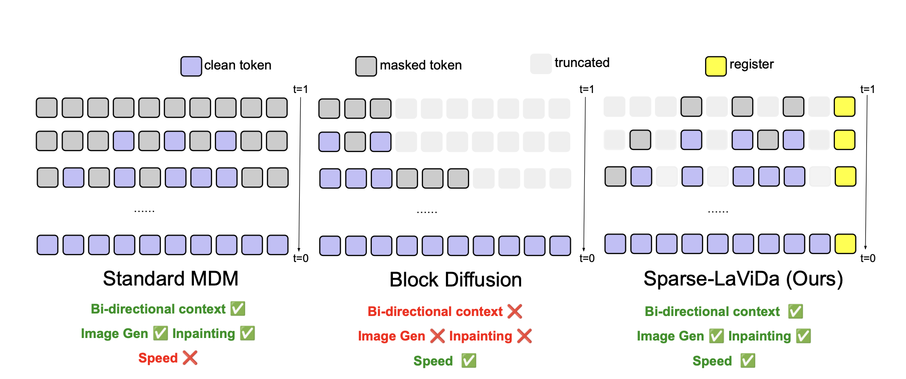
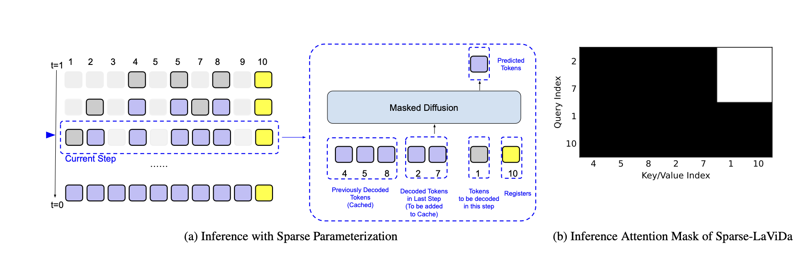
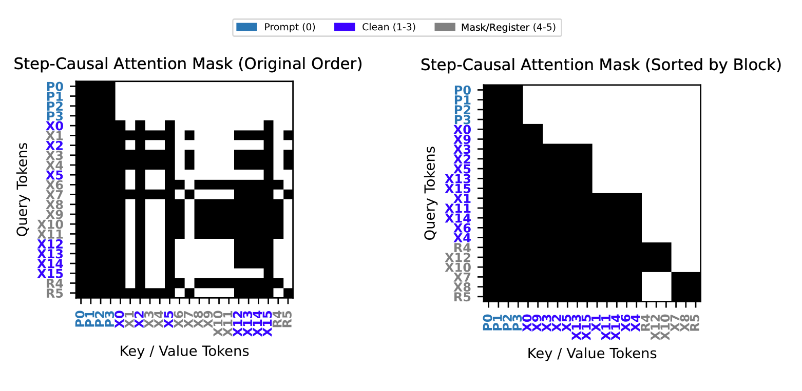
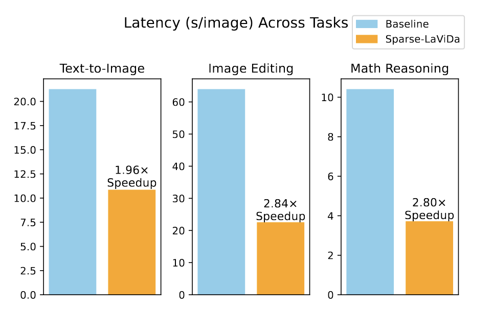
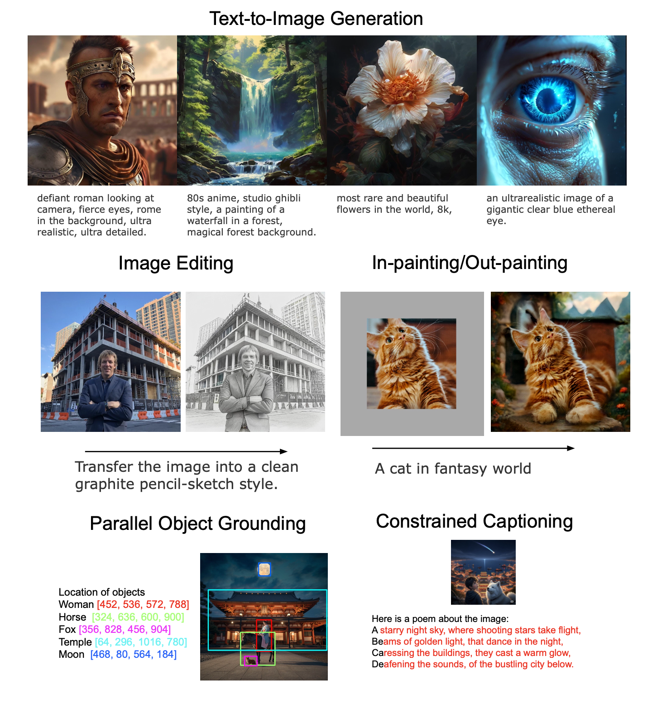

Masked Discrete Diffusion Models (MDMs) have achieved strong performance across a wide range of multimodal tasks, including image understanding, generation, and editing. However, their inference speed remains suboptimal due to the need to repeatedly process redundant masked tokens at every sampling step. In this work, we propose Sparse-LaViDa, a novel modeling framework that dynamically truncates unnecessary masked tokens at each inference step to accelerate MDM sampling. To preserve generation quality, we introduce specialized register tokens that serve as compact representations for the truncated tokens. Furthermore, to ensure consistency between training and inference, we design a specialized attention mask that faithfully matches the truncated sampling procedure during training. Built upon the state-of-the-art unified MDM LaViDa-O, Sparse-LaViDa achieves up to a 2x speedup across diverse tasks including text-to-image generation, image editing, and mathematical reasoning, while maintaining generation quality.

Sparse-LaViDa builds on masked discrete diffusion models (MDMs), which explicitly process all masked tokens and support arbitrary-order decoding with bidirectional context, making them well suited for tasks such as image generation and inpainting. Block Diffusion improves efficiency by truncating redundant masked tokens from the right, but it enforces a left-to-right generation order via a block-causal attention mask, thereby losing many of the key benefits of MDMs and is only used for language modeling. Sparse-LaViDa offers an alternative parameterization that preserves the full flexibility of standard MDMs while achieving similar efficiency gains: it allows masked tokens to be truncated at arbitrary positions and introduces special register tokens that act as compact representations of the truncated content.

Sparse-LaViDa's inference proceeds in a staged decoding process. At each step, the model works with a mixture of tokens that include previously generated content retained from earlier steps, newly generated tokens from the immediately preceding step, tokens that are still masked and scheduled to be predicted next, and a small set of register tokens that summarize truncated information. During sampling, a carefully designed attention pattern ensures a clean separation of roles: newly generated tokens do not look ahead to masked or register tokens. This design maintains correct generation order while allowing the model to decode efficiently without unnecessary computation.

During training, we use a step-causal attention mask that mirrors how the model behaves at inference time. The input sequence contains prompt tokens followed by answer tokens, some of which are already known while others are masked. As in inference, known tokens are generated earlier in multiple steps. To reflect this, we group tokens into ordered blocks so that each token can only attend to tokens from earlier stages or its own stage. Masked tokens are placed into separate groups, each paired with a small register token that summarizes the information the model would not directly see at inference. The attention pattern ensures that masked groups remain isolated from one another while still having access to all earlier, unmasked content. In this way, a single training step can faithfully reproduce multiple possible inference paths, aligning training behavior with how the model is actually used at test time.

Thanks to the efficient sparse parameterization, Sparse-LaVida achieves considerable speedup on a wide range of tasks. Notably, it achieves 1.96x speedup on text-to-image generation, 2.84x speedup on image editing and 2.80x speedup on visual math problem solving.
